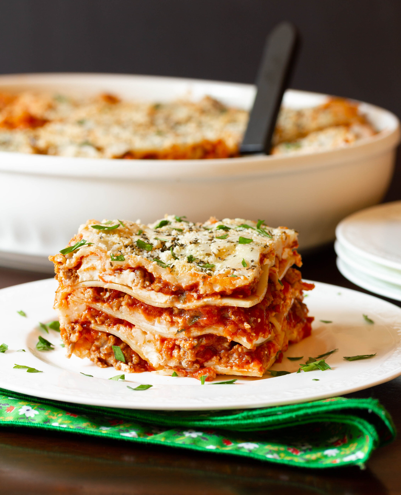

Cozy Lasagna Recipe

Description:
Lasagne are a type of pasta that is contains layers of alternate fillings.
In this recipe, the layers will contain either cheese filling, meat sauce, layered together with noodles.
This savory, yet easy to make, dish is the only main entree that can fit with the cozy meal.
Ingredients:
- 12 lasagna noodles uncooked
- 4 cups of mozzarella cheese shredded and divided
- 0.5 cups parmesan cheese shredded and divided
- 0.5 pound lean ground beef
- 0.5 pound italian sausage
- 1 onion diced
- 2 garlic cloves minced
- 36 ounces of pasta sauce
- 2 tablespoons tomato paste
- 1 teaspoon italian seasoning
- 2 cups of ricotta cheese
- 0.25 cup of chopped fresh parsley
- one egg beaten
Steps:
- Heat oven to 350°F
- Cook pasta al dente according to specific noodle package directions.
- Rinse pasta under cold water and set aside.
- Place gound beef, sausage, onion, and garlic over medium high heat until no pink remains. Drain fat.
- Stir in pasta sauce, tomato paste, and italian seasoning. Simmer for 5 minutes.
- Make cheese mixture by combining 1.5 cups mozarella cheese, 0.25 cups parmesan cheese, ricotta, parsley, and egg.
- Add 1 cup of meat sauce onto a pan (we use a 9x13 one).
- Top with 3 lasagna noodles, and layer with 1/3 of cheese mixture and one cup of meat sauce. Repeat twice more
- Finish with 3 noodles topped with remaining sauce.
- Cover with foil and bake for 45 minutes in preheated oven
- Uncover, sprinking the remaining cheese on, and bake an additional 15 minutes or until browned and bubbly.
- Broil 2-3 minutes if desired.
- Rest for 10-15 minutes before cutting and serving
- Enjoy!